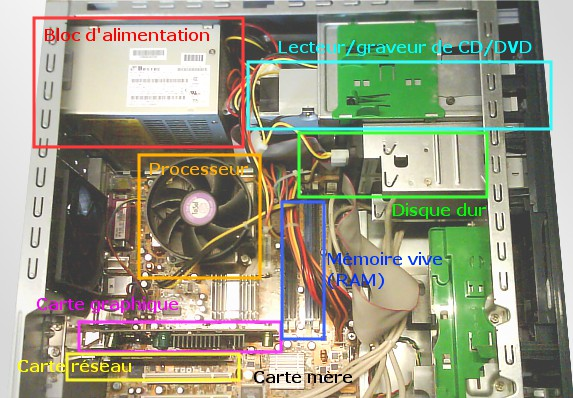
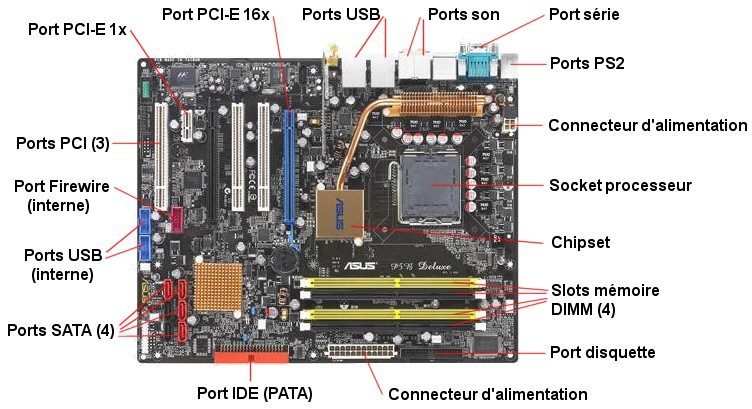

Le but de ce site étant de faire un simple récapitulatifs de ce que nous avons pour le moment pu étudier en ISN, il semble logique de débuter par évoquer l'enseignement général que nous avons reçu concernant l'informatique et plus généralement la composition d'un ordinateur.
Nous avons donc commencé par être mis devant un ordinateur décomposé et démonté afin que chacun puisse se familiariser avec les différents composants que comporte un ordinateur de bureau des plus classiques que chacun serait suscéptible de posséder chez lui.
Pour rentrer dans les détails, nous avons ensuite étudier la carte mère et ses composants que nous avons pu nommer plus ou moins facilement selon les conaissance de chacun. Ce fut l'occasion de se rendre compte de la compléxité de fonctionnement d'un ordinateur.
Vous êtes maintenant invité à utiliser le menu sur le bandeau gauche afin de pouvoir visualiser les différentes informations concernant les cours suivants.
Mise en page par RUBIO Anthony, élêve de Terminale S1